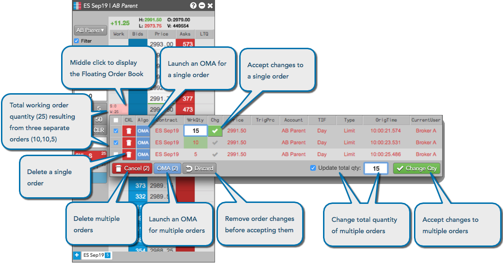

The Floating Order Book displays all of the individual orders for a specific instruments at a specific price level. You can launch a Floating Order Book from MD Trader, Market Grid, and Spread Matrix. After launching a Floating Order Book, you can modify or delete individual or multiple orders.
